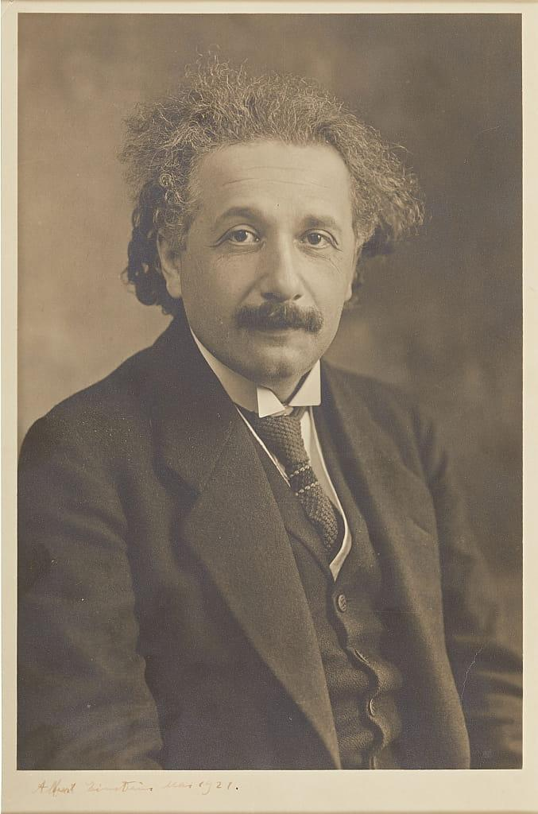

Albert Einstein
➜➜➜
➜➜➜
原論文
Zur Elektrodynamik bewegter Körper / von A. Einstein
book121paper.html
英訳
原論文の英語訳へ移動します。
book121eng.html
日本語訳
原論文の日本語訳へ移動します。
book121jap.html
TPAI法適用
論文をTPAI法で読むための方法・手順へ移動します。
book121method.html
ブログ
一般読者向けの解説ブログへ移動します。
book121.html
解析結果
TPAI法による解釈・分析結果へ移動します。
book121sol.html
対比ブログ
関連文書を対比して読めるページへ移動します。
book121contrast.html
理系の人間なら一度は読んでみたいアインシュタインの
「特殊相対性理論」の原論文（1905年）に挑戦した。
ブログの作成方法
-
論文をネットで探す
以下のドイツ語原文を得た。
論文名：
「Zur Elektrodynamik bewegter Körper」
日本語訳：
「運動する物体の電気力学について」
英訳：
「On the Electrodynamics of Moving Bodies」
-
TPAI法による解析
筆者による
「TPAI法 - Thinking through academic paper with AI -」
を用いて、論文の英訳文を英語で解析し、
所定フォーマットへ結果を記入した。
（アシスト＝AI）
-
ブログ化
記入済みフォーマットをベースに、
中学生向けのブログを作成した。
（構成＝筆者、作成＝AI）
-
対比ブログ作成
理解を深めるため、
ブログ本文と日本語訳文との対比ブログ
（book121contrast.html）
も作成した。
結果
1. ブログのナビ
book121navi.html
2. ブログ本文
book121.html
3. 対比ブログ
book121contrast.html
4. 添付資料群
book121paper.html
book121eng.html
book121method.html
book121sol.html